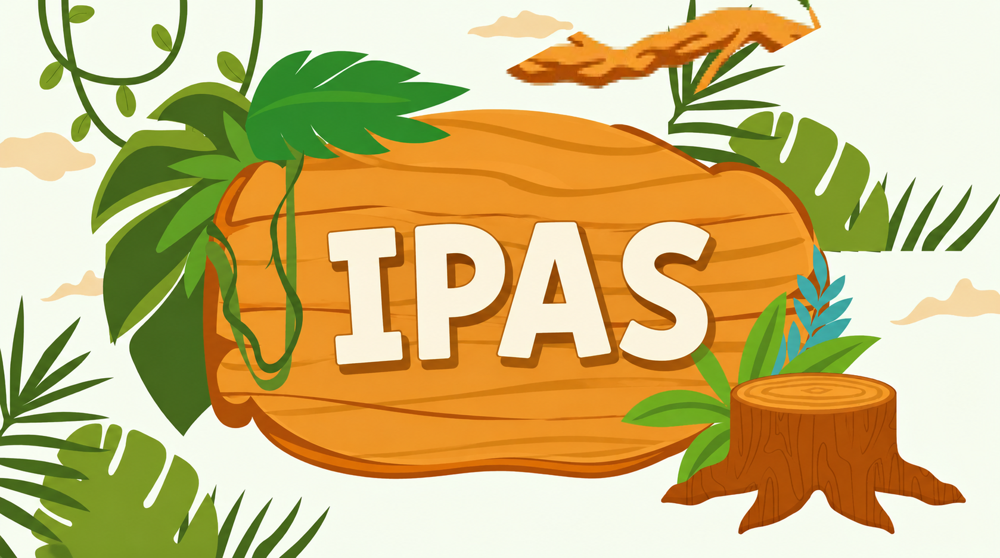
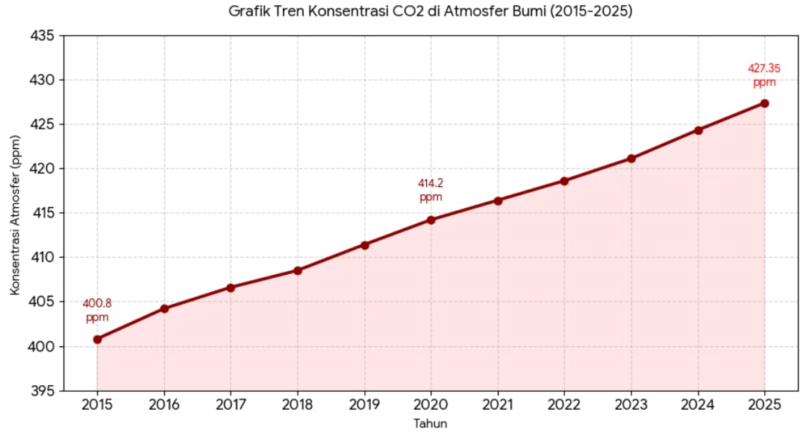
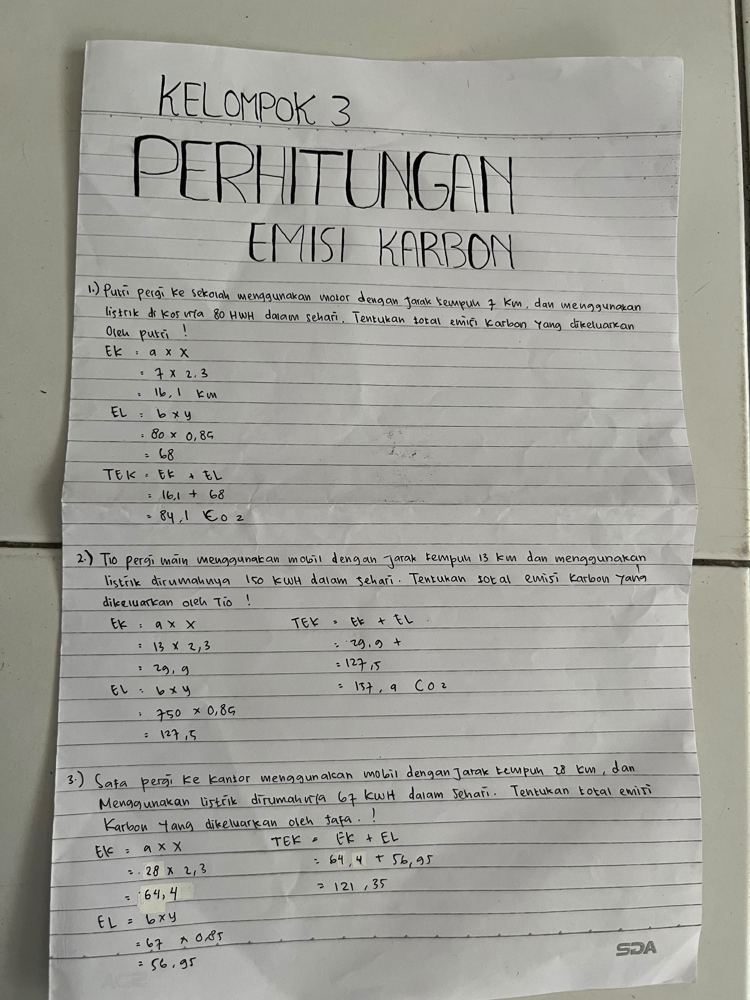

IPAS

1. Maysha
| PERANGKAT ELEKTRONIK | JUMLAH UNIT | DAYA (WATT) | DURASI (JAM) | TOTAL ENERGI (WH) | TOTAL ENERGI (KWH) |
|---|---|---|---|---|---|
| Lampu | 34 | 5 W | 13 | 2.210 Wh | 2,21 kWh |
| Kulkas | 3 | 200 W | 24 | 14.400 Wh | 14,40 kWh |
| Mesin Cuci | 2 | 145 W | 3 | 870 Wh | 0,87 kWh |
| Kipas Angin | 7 | 80 W | 5 | 2.800 Wh | 2,80 kWh |
| Wi-Fi | 2 | 20 W | 24 | 960 Wh | 0,96 kWh |
| Magic Com | 3 | 300 W | 18 | 16.200 Wh | 16,20 kWh |
| Setrika | 2 | 300 W | 1 | 600 Wh | 0,60 kWh |
| Televisi | 4 | 100 W | 4 | 1.600 Wh | 1,60 kWh |
| AC | 3 | 500 W | 12 | 18.000 Wh | 18,00 kWh |
| TOTAL KONSUMSI LISTRIK HARIAN | 57.640 Wh | 57,64 kWh | |||
| ESTIMASI EMISI KARBON LISTRIK (Faktor: 0,85 kg CO2e/kWh) | 48,99 kg CO2e | ||||
| KENDARAAN | JENIS BENSIN | VOLUME (LITER) | EMISI KARBON (KG CO2E) |
|---|---|---|---|
| Scoopy | Pertamax | 2 Liter | 4,52 kg |
| Vario | Pertamax | 2 Liter | 4,52 kg |
| TOTAL VOLUME BBM | 4 Liter | 9,04 kg CO2e | |
2. Delima
| PERANGKAT ELEKTRONIK | JUMLAH UNIT | DAYA (WATT) | DURASI (JAM) | TOTAL ENERGI (WH) | TOTAL ENERGI (KWH) |
|---|---|---|---|---|---|
| Lampu | 9 | 5 W | 12 | 540 Wh | 0,54 kWh |
| Kulkas | 1 | 150 W | 24 | 3.600 Wh | 3,60 kWh |
| Mesin Cuci | 1 | 145 W | 4 | 580 Wh | 0,58 kWh |
| Kipas Angin | 4 | 75 W | 24 | 7.200 Wh | 7,20 kWh |
| Wi-Fi | 1 | 20 W | 24 | 480 Wh | 0,48 kWh |
| Magicom | 1 | 300 W | 17 | 5.100 Wh | 5,10 kWh |
| Filter Aquarium | 1 | 10 W | 24 | 240 Wh | 0,24 kWh |
| Blender | 1 | 300 W | 2 | 600 Wh | 0,60 kWh |
| Spiker | 1 | 60 W | 7 | 420 Wh | 0,42 kWh |
| TOTAL KONSUMSI LISTRIK HARIAN | 18.760 Wh | 18,76 kWh | |||
| ESTIMASI EMISI KARBON LISTRIK (Faktor: 0,85 kg CO2e/kWh) | 15,95 kg CO2e | ||||
| KENDARAAN | JENIS BENSIN | VOLUME (LITER) | EMISI KARBON (KG CO2E) |
|---|---|---|---|
| Scoopy | Pertamax | 15 Liter | 33,90 kg |
| TOTAL VOLUME BBM | 15 Liter | 33,90 kg CO2e | |
3. Fico
| PERANGKAT ELEKTRONIK | JUMLAH UNIT | DAYA (WATT) | DURASI (JAM) | TOTAL ENERGI (WH) | TOTAL ENERGI (KWH) |
|---|---|---|---|---|---|
| Lampu | 7 | 6 W | 7 | 294 Wh | 0,29 kWh |
| Kulkas | 1 | 150 W | 24 | 3.600 Wh | 3,60 kWh |
| Mesin Cuci | 1 | 450 W | 2 | 900 Wh | 0,90 kWh |
| Kipas Angin | 4 | 60 W | 12 | 2.880 Wh | 2,88 kWh |
| Wi-Fi | 1 | 20 W | 24 | 480 Wh | 0,48 kWh |
| TV | 1 | 75 W | 6 | 450 Wh | 0,45 kWh |
| Magicom | 1 | 350 W | 10 | 3.500 Wh | 3,50 kWh |
| Setrika | 1 | 450 W | 0.5 | 225 Wh | 0,23 kWh |
| TOTAL KONSUMSI LISTRIK HARIAN | 12.329 Wh | 12,33 kWh | |||
| ESTIMASI EMISI KARBON LISTRIK (Faktor: 0,85 kg CO2e/kWh) | 10,48 kg CO2e | ||||
| KENDARAAN | JENIS BENSIN | VOLUME (LITER) | EMISI KARBON (KG CO2E) |
|---|---|---|---|
| Revo | Pertalite | 4 Liter | 9,32 kg |
| Supra | Pertalite | 4 Liter | 9,32 kg |
| TOTAL VOLUME BBM | 8 Liter | 18,64 kg CO2e | |
4. Guntur
| PERANGKAT ELEKTRONIK | JUMLAH UNIT | DAYA (WATT) | DURASI (JAM) | TOTAL ENERGI (WH) | TOTAL ENERGI (KWH) |
|---|---|---|---|---|---|
| Lampu | 9 | 5 W | 8 | 360 Wh | 0,36 kWh |
| Kulkas | 1 | 130 W | 24 | 3.120 Wh | 3,12 kWh |
| Mesin Cuci | 2 | 500 W | 7 | 7.000 Wh | 7,00 kWh |
| Kipas Angin | 2 | 75 W | 24 | 3.600 Wh | 3,60 kWh |
| Wi-Fi | 1 | 18 W | 24 | 432 Wh | 0,43 kWh |
| TOTAL KONSUMSI LISTRIK HARIAN | 14.912 Wh | 14,91 kWh | |||
| ESTIMASI EMISI KARBON LISTRIK (Faktor: 0,85 kg CO2e/kWh) | 12,67 kg CO2e | ||||
| KENDARAAN | JENIS BENSIN | VOLUME (LITER) | EMISI KARBON (KG CO2E) |
|---|---|---|---|
| Supra | Pertalite | 4 Liter | 9,32 kg |
| Astrea | Pertalite | 4 Liter | 9,32 kg |
| TOTAL VOLUME BBM | 8 Liter | 18,64 kg CO2e | |
5. Keyra
| PERANGKAT ELEKTRONIK | JUMLAH UNIT | DAYA (WATT) | DURASI (JAM) | TOTAL ENERGI (WH) | TOTAL ENERGI (KWH) |
|---|---|---|---|---|---|
| Lampu | 15 | 10 W | 15 | 2.250 Wh | 2,25 kWh |
| Kulkas | 2 | 200 W | 24 | 9.600 Wh | 9,60 kWh |
| Mesin Cuci | 1 | 160 W | 2 | 320 Wh | 0,32 kWh |
| Kipas Angin | 3 | 80 W | 24 | 5.760 Wh | 5,76 kWh |
| Wi-Fi | 1 | 19 W | 24 | 456 Wh | 0,46 kWh |
| AC | 2 | 1.920 W | 24 | 92.160 Wh | 92,16 kWh |
| Freezer | 1 | 800 W | 24 | 19.200 Wh | 19,20 kWh |
| Magicom | 2 | 300 W | 16 | 9.600 Wh | 9,60 kWh |
| Televisi | 2 | 100 W | 10 | 2.000 Wh | 2,00 kWh |
| Setrika | 1 | 350 W | 0.5 | 175 Wh | 0,18 kWh |
| TOTAL KONSUMSI LISTRIK HARIAN | 141.521 Wh | 141,52 kWh | |||
| ESTIMASI EMISI KARBON LISTRIK (Faktor: 0,85 kg CO2e/kWh) | 120,29 kg CO2e | ||||
| KENDARAAN | JENIS BENSIN | VOLUME (LITER) | EMISI KARBON (KG CO2E) |
|---|---|---|---|
| Vario (Unit 1) | Pertamax | 50 Liter | 113,00 kg |
| Vario (Unit 2) | Pertamax | 55 Liter | 124,30 kg |
| TOTAL VOLUME BBM | 105 Liter | 237,30 kg CO2e | |
6. Sinta
| PERANGKAT ELEKTRONIK | JUMLAH UNIT | DAYA (WATT) | DURASI (JAM) | TOTAL ENERGI (WH) | TOTAL ENERGI (KWH) |
|---|---|---|---|---|---|
| Lampu | 8 | 5 W | 6 | 240 Wh | 0,24 kWh |
| Kulkas | 1 | 200 W | 24 | 4.800 Wh | 4,80 kWh |
| Kipas Angin | 2 | 200 W | 7 | 2.800 Wh | 2,80 kWh |
| Wi-Fi | 1 | 20 W | 24 | 480 Wh | 0,48 kWh |
| Magicom | 1 | 300 W | 10 | 3.000 Wh | 3,00 kWh |
| Keyboard | 1 | 100 W | 2 | 200 Wh | 0,20 kWh |
| TOTAL KONSUMSI LISTRIK HARIAN | 11.520 Wh | 11,52 kWh | |||
| ESTIMASI EMISI KARBON LISTRIK (Faktor: 0,85 kg CO2e/kWh) | 9,79 kg CO2e | ||||
| KENDARAAN | JENIS BENSIN | VOLUME (LITER) | EMISI KARBON (KG CO2E) |
|---|---|---|---|
| Beat | Pertalite | 20 Liter | 46,60 kg |
| TOTAL VOLUME BBM | 20 Liter | 46,60 kg CO2e | |
Uraian Reaksi Pembakaran Bahan Bakar Fosil dan Penggunaan Listrik PLN hingga Melepaskan Karbon ke Atmosfer
Bahan bakar fosil seperti bensin, solar, batu bara, dan gas alam mengandung unsur karbon (C). Ketika bahan bakar tersebut digunakan untuk menghasilkan energi, terjadi proses pembakaran yang melibatkan oksigen (O₂) dari udara. Dalam proses ini, karbon yang terkandung dalam bahan bakar bereaksi dengan oksigen dan menghasilkan karbon dioksida (CO₂), sedangkan hidrogen menghasilkan uap air (H₂O).
Reaksi tersebut menghasilkan energi yang digunakan untuk menggerakkan kendaraan, tetapi juga menghasilkan gas CO₂ yang dilepaskan ke atmosfer. Semakin banyak bahan bakar yang dibakar, semakin besar pula emisi karbon yang dihasilkan.
Pada penggunaan listrik PLN, emisi karbon tidak dihasilkan langsung dari peralatan listrik di rumah. Namun, sebagian besar listrik di Indonesia masih diproduksi oleh pembangkit listrik berbahan bakar fosil, terutama batu bara dan gas alam. Di pembangkit listrik, batu bara dibakar untuk memanaskan air hingga menghasilkan uap bertekanan tinggi yang memutar turbin dan generator pembangkit listrik. Saat batu bara dibakar, karbon yang terkandung di dalamnya bereaksi dengan oksigen sehingga menghasilkan karbon dioksida.
Reaksi sederhana pembakaran karbon pada batu bara:
C + O₂ + CO₂ + energi
Gas CO₂ yang terbentuk kemudian dilepaskan melalui cerobong pembangkit ke atmosfer. Oleh karena itu, semakin besar penggunaan listrik di rumah, semakin besar pula kebutuhan produksi listrik di pembangkit, yang pada akhirnya meningkatkan emisi karbon ke atmosfer.
Karbon dioksida (CO₂) merupakan salah satu gas rumah kaca yang dapat menahan panas Matahari di atmosfer. Peningkatan konsentrasi CO₂ menyebabkan efek rumah kaca semakin kuat, sehingga suhu rata-rata bumi meningkat dan memicu pemanasan global serta perubahan iklim. Dengan demikian, baik penggunaan bahan bakar fosil secara langsung maupun penggunaan listrik yang berasal dari pembangkit berbahan bakar fosil sama-sama berkontribusi terhadap peningkatan emisi karbon di atmosfer.
Grafik Tren Kosentrasi CO2 di Amosfer Bumi 2015-2025

2015 (400,8 ppm) — Tahun bersejarah sekaligus alarm bagi iklim dunia. Untuk pertama kalinya dalam sejarah modern, konsentrasi CO₂ rata-rata global resmi menembus dan bertahan di atas ambang batas psikologis 400 ppm sepanjang tahun penuh.
2016 (404,2 ppm) — Terjadi lonjakan tahunan yang sangat besar (+3,4 ppm). Hal ini dipicu oleh perpaduan antara emisi industri dan fenomena iklim El Niño kuat, yang menyebabkan kekeringan parah dan kebakaran hutan hebat di berbagai belahan dunia (termasuk Indonesia), sehingga pelepasan karbon ke atmosfer melonjak.
2017 (406,6 ppm) — Meskipun fenomena El Niño mereda, konsentrasi tetap naik sebesar 2,4 ppm. Ini membuktikan bahwa tanpa faktor alam pun, aktivitas harian manusia sudah cukup untuk terus mengotori atmosfer.
2018 (408,5 ppm) — Konsentrasi naik sebesar 1,9 ppm. Pertumbuhan ekonomi global dan peningkatan konsumsi batu bara serta minyak bumi di negara-negara berkembang terus mendorong angka ini ke atas.
2019 (411,4 ppm) — Grafik resmi melewati angka 410 ppm dengan kenaikan tahunan sebesar 2,9 ppm. Sektor transportasi global dan pembangkit listrik konvensional menjadi penyumbang emisi terbesar.
2020 (414,2 ppm) — Tahun terjadinya pandemi COVID-19. Meskipun ada lockdown global yang menurunkan emisi harian dari transportasi, konsentrasi total di atmosfer tetap naik sebesar 2,8 ppm. Hal ini terjadi karena CO₂ yang sudah terlanjur dilepaskan di tahun-tahun sebelumnya dapat bertahan di atmosfer selama ratusan tahun.
2021 (416,4 ppm) — Ekonomi dunia mulai pulih dan aktivitas industri kembali dibuka secara massal. Emisi karbon global melonjak kembali (rebound) untuk mengejar ketertinggalan produksi, menaikkan angka atmosfer sebesar 2,2 ppm.
2022 (418,6 ppm) — Konsentrasi naik sebesar 2,2 ppm. Krisis energi global memaksa beberapa negara kembali mengandalkan pembangkit listrik bertenaga batu bara yang menghasilkan emisi tinggi.
2023 (421,1 ppm) — Bumi resmi melewati ambang batas 420 ppm. Dunia mulai kembali memasuki fase El Niño baru yang menurunkan kemampuan hutan sebagai penyerap karbon alami karena suhu yang terlalu panas dan kering.
2024 (424,3 ppm) — Terjadi lonjakan tajam sebesar 3,2 ppm. Tahun ini tercatat sebagai salah satu tahun dengan rekor kenaikan suhu bumi terpanas, mempercepat penguapan dan menurunkan efisiensi lautan dalam menyerap gas CO₂.
2025 (427,35 ppm) — Mencapai titik tertinggi dalam sejarah pengamatan manusia modern. Konsentrasi menyentuh 427,35 ppm, menegaskan bahwa laju akumulasi karbon di atmosfer bumi masih belum berhasil ditekan secara signifikan oleh komitmen iklim global saat ini.
Grafik Suhu Permukaan Global Per Tahun 2015-2025

Kesimpulan Kondisi CO₂ Global (2015–2025)
Jika kita melihat data secara menyeluruh, terdapat beberapa kesimpulan penting mengenai kondisi CO₂ dalam satu dekade terakhir:
-
Percepatan Laju Pertumbuhan (Akselerasi)
Pada abad ke-20, laju kenaikan CO₂ rata-rata hanya berkisar antara 0,5 ppm hingga 1,5 ppm per tahun. Namun, dalam sepuluh tahun terakhir (2015–2025), laju kenaikannya melesat tajam menjadi rata-rata 2,65 ppm per tahun. Hal ini menunjukkan bahwa atmosfer bumi menerima tambahan karbon dengan kecepatan yang jauh lebih tinggi dibandingkan periode-periode sebelumnya.
-
Sifat Karbon yang Akumulatif
Banyak orang mengira bahwa penurunan emisi, seperti yang terjadi saat pandemi tahun 2020, akan langsung menurunkan kadar CO₂ di atmosfer. Faktanya, gas CO₂ bersifat akumulatif. Setelah dilepaskan ke udara, molekul CO₂ dapat bertahan selama 300 hingga 1.000 tahun.
Oleh karena itu, konsentrasi CO₂ di atmosfer akan terus meningkat selama manusia masih menghasilkan emisi karbon, meskipun jumlah emisi tahunan sempat mengalami penurunan.
-
Menurunnya Kemampuan Penyerap Karbon Alami Bumi
Secara alami, bumi memiliki penyerap karbon (carbon sink) berupa hutan dan lautan. Kedua komponen ini berperan penting dalam menyerap sebagian karbon yang dilepaskan ke atmosfer.
Namun, deforestasi yang terus terjadi serta meningkatnya suhu air laut telah mengurangi kemampuan bumi untuk menyerap CO₂. Air laut yang lebih hangat tidak dapat menyerap gas seefektif air yang lebih dingin, sehingga kemampuan alami bumi untuk menyeimbangkan emisi karbon semakin terbebani.
Analisis Dampak Tingginya Konsentrasi Akumulasi Gas CO₂ di Atmosfer terhadap Pemanasan Ekosistem Global
Gas CO₂ (karbon dioksida) sebenarnya merupakan bagian alami dari atmosfer dan diperlukan dalam proses fotosintesis tumbuhan. Namun, aktivitas manusia seperti penggunaan kendaraan bermotor, pembakaran bahan bakar fosil, dan penebangan hutan menyebabkan jumlah CO₂ di atmosfer terus meningkat. Akumulasi CO₂ yang berlebihan membuat panas Matahari lebih banyak terperangkap di atmosfer sehingga memicu pemanasan global. Dampak yang ditimbulkan tidak hanya dirasakan oleh manusia, tetapi juga oleh seluruh ekosistem di Bumi.
1. Meningkatnya Suhu Global
Ketika konsentrasi CO₂ meningkat, kemampuan atmosfer untuk menahan panas juga meningkat. Akibatnya, suhu rata-rata Bumi terus naik dari tahun ke tahun. Kenaikan suhu ini mungkin terlihat kecil jika dihitung dalam angka, tetapi dampaknya sangat besar terhadap keseimbangan lingkungan. Suhu yang lebih panas dapat mengubah kondisi habitat dan memengaruhi kehidupan berbagai makhluk hidup.
2. Perubahan Pola Iklim
Pemanasan global menyebabkan pola iklim menjadi tidak stabil. Musim yang sebelumnya dapat diprediksi kini sering mengalami pergeseran. Curah hujan menjadi tidak menentu, sehingga ada daerah yang mengalami kekeringan panjang dan ada pula yang mengalami hujan berlebihan. Perubahan ini menyulitkan sektor pertanian, mengganggu ketersediaan air, dan meningkatkan risiko bencana alam seperti banjir dan tanah longsor.
3. Gangguan terhadap Keanekaragaman Hayati
Setiap spesies memiliki kondisi lingkungan yang ideal untuk hidup. Ketika suhu meningkat dan iklim berubah, banyak organisme harus beradaptasi atau berpindah ke habitat baru. Namun, tidak semua spesies mampu melakukan hal tersebut. Akibatnya, populasi beberapa hewan dan tumbuhan dapat menurun bahkan terancam punah. Jika satu spesies terganggu, spesies lain yang bergantung padanya juga dapat terdampak sehingga keseimbangan ekosistem ikut terganggu.
4. Pencairan Es di Kutub dan Kenaikan Permukaan Laut
Salah satu dampak paling nyata dari pemanasan global adalah mencairnya es di wilayah kutub dan gletser. Ketika es mencair, volume air laut bertambah sehingga permukaan laut naik. Kenaikan permukaan laut dapat menyebabkan wilayah pesisir mengalami banjir, abrasi, dan hilangnya lahan tempat tinggal masyarakat. Selain itu, habitat hewan seperti beruang kutub dan penguin juga semakin terancam.
5. Kerusakan Ekosistem Laut
Laut berperan menyerap sebagian CO₂ yang ada di atmosfer. Namun, jika jumlah CO₂ terlalu banyak, air laut menjadi lebih asam. Kondisi ini dapat merusak terumbu karang yang menjadi habitat berbagai jenis ikan dan organisme laut lainnya. Kerusakan terumbu karang tidak hanya mengurangi keanekaragaman hayati laut, tetapi juga memengaruhi mata pencaharian masyarakat yang bergantung pada sektor perikanan.
6. Dampak terhadap Kehidupan Manusia
Perubahan lingkungan akibat tingginya konsentrasi CO₂ secara langsung memengaruhi kehidupan manusia. Hasil pertanian dapat menurun karena perubahan musim dan cuaca ekstrem. Ketersediaan air bersih menjadi lebih terbatas di beberapa wilayah. Selain itu, gelombang panas dan bencana alam yang semakin sering terjadi dapat meningkatkan risiko kesehatan serta menimbulkan kerugian ekonomi yang besar.
Refleksi Solutif
Carbon offset adalah upaya untuk mengurangi atau menyeimbangkan emisi karbon yang dihasilkan dari aktivitas manusia, seperti penggunaan listrik dan kendaraan bermotor. Tujuannya adalah mengurangi dampak pemanasan global dan menjaga kelestarian lingkungan.
A. Penghijauan dan Penanaman Pohon
Menanam pohon merupakan salah satu cara paling efektif untuk menyerap karbon dioksida (CO₂) dari atmosfer. Melalui proses fotosintesis, pohon menyerap CO₂ dan mengubahnya menjadi oksigen yang dibutuhkan makhluk hidup.
Contoh Tindakan:
Menanam pohon di halaman rumah, sekolah, atau lingkungan sekitar. Mengikuti kegiatan reboisasi atau penghijauan. Merawat tanaman agar dapat tumbuh dengan baik dan menyerap karbon secara optimal.
Manfaat:
- Mengurangi konsentrasi CO₂ di udara.
- Menurunkan suhu lingkungan.
- Meningkatkan kualitas udara dan keanekaragaman hayati.
B. Penghematan Energi Listrik
Sebagian besar listrik di Indonesia masih dihasilkan dari pembakaran bahan bakar fosil, terutama batu bara. Oleh karena itu, mengurangi konsumsi listrik dapat membantu menurunkan emisi karbon dari sektor pembangkit listrik.
Contoh Tindakan:
- Berjalan kaki atau bersepeda untuk jarak dekat.
- Menggunakan transportasi umum.
- Berbagi kendaraan (carpool) dengan teman atau keluarga.
- Merawat kendaraan secara rutin agar pembakaran bahan bakar lebih efisien.
Matematika

Hitung Emisi Karbon
| No | Kendaraan (x) | Listrik (y) | Total Emisi f(x,y) |
|---|